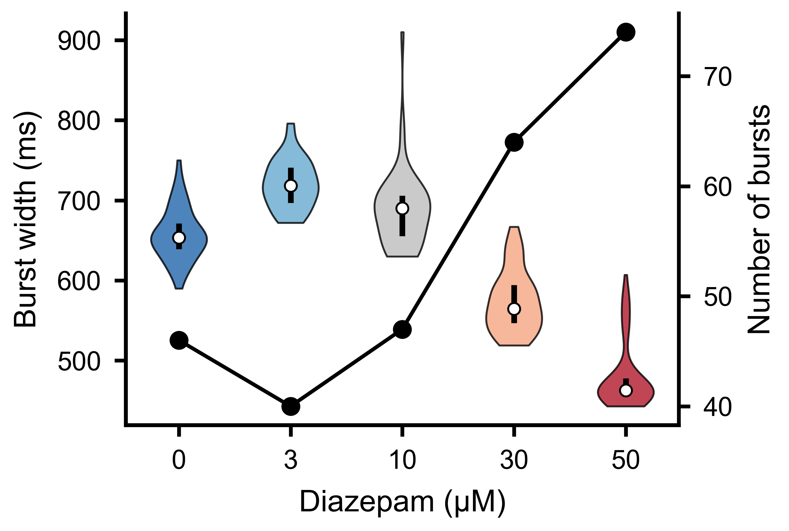
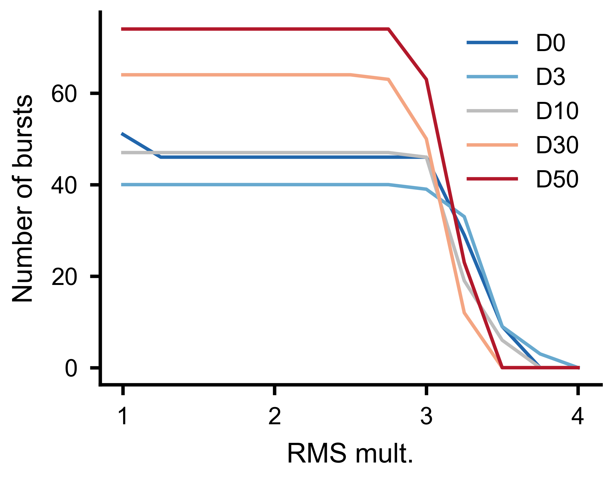
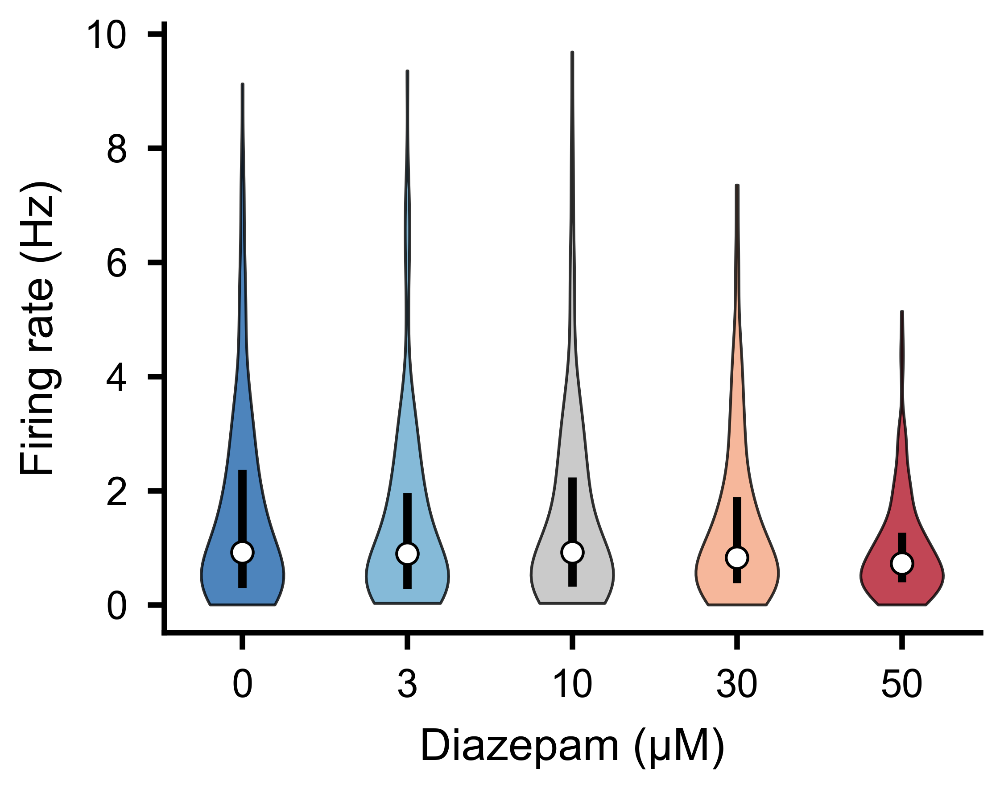
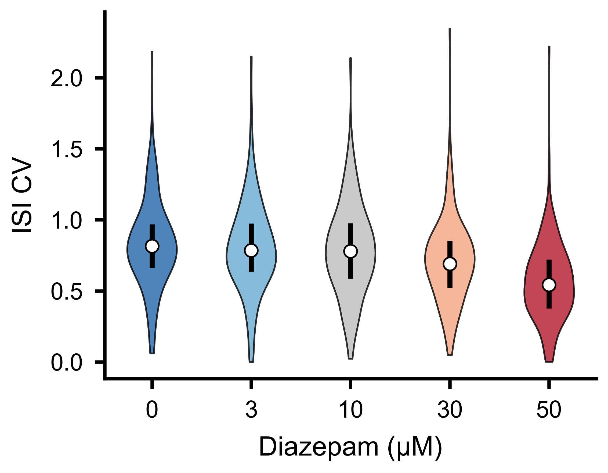
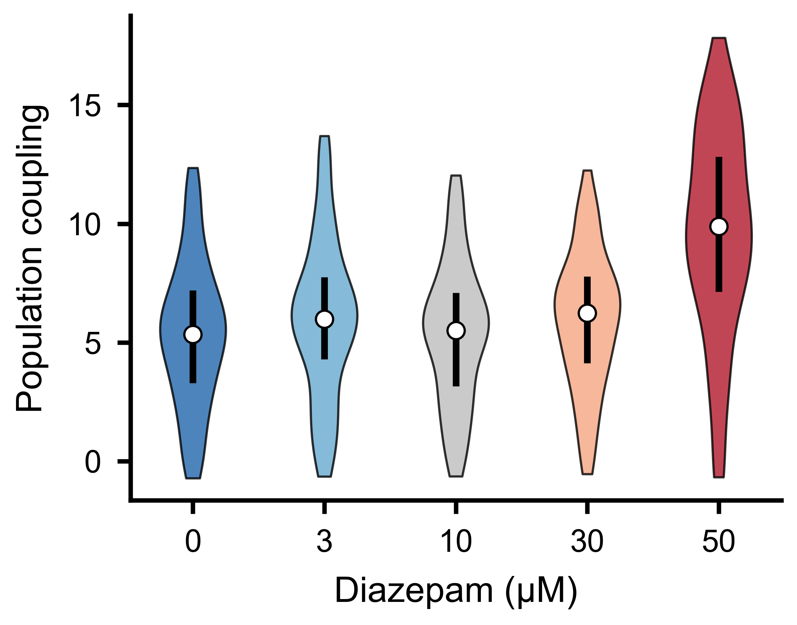
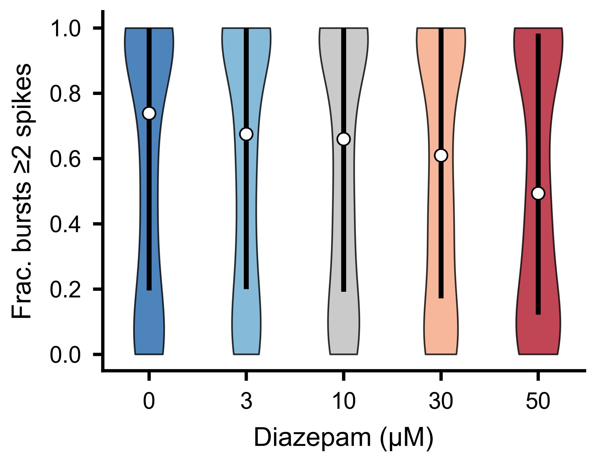
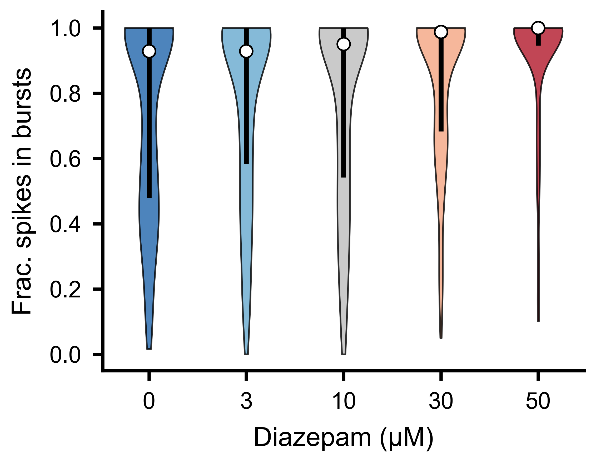

Spike Analysis
This guide covers the core spike train analysis tools in SpikeLab: computing the population firing rate, detecting network bursts, extracting per-unit metrics, and running parameter sensitivity sweeps. By the end you will know how to characterise the temporal structure of an MEA recording from raw spike data.
All examples assume you already have a SpikeData object
loaded. See the Quick Start for how to create one.
from spikelab import SpikeData
# sd is your loaded SpikeData (e.g. from pickle, HDF5, or NWB)
Population Rate
The population rate is the smoothed aggregate firing rate across all units. SpikeLab computes it in two stages: an optional square (boxcar) convolution followed by an optional Gaussian convolution, both applied to the binned population spike count.
pop_rate = sd.get_pop_rate(
square_width=20, # full width of the boxcar kernel (ms)
gauss_sigma=100, # standard deviation of the Gaussian kernel (ms)
raster_bin_size_ms=1.0, # bin size for binning spike times to the raster (ms)
)
The returned array has one value per millisecond-wide bin and represents the smoothed population firing rate over time.
Adjusting square_width and gauss_sigma controls the trade-off between
temporal resolution and smoothness. A smaller gauss_sigma preserves fast
transients; a larger value reveals slow trends. Setting either to 0 skips
that smoothing step entirely. The raster_bin_size_ms parameter sets the bin
size used for binning spike times to the internal raster.
Burst Detection
Network bursts are periods of elevated population activity that stand out above
baseline. get_bursts() detects them by thresholding
the smoothed population rate:
tburst, edges, peak_amp = sd.get_bursts(
thr_burst=2.5, # RMS multiplier for peak detection
min_burst_diff=1000, # minimum distance between burst peaks (bins)
burst_edge_mult_thresh=0.2, # fraction of peak height for edge detection
square_width=20, # pop rate smoothing: boxcar full width (ms)
gauss_sigma=100, # pop rate smoothing: Gaussian sigma (ms)
raster_bin_size_ms=1.0, # raster bin size (ms)
)
The return values are:
tburst— 1-D array of burst peak times (in bin indices).edges—(B, 2)array where each row is[start_bin, end_bin]for one burst.peak_amp— 1-D array of peak amplitudes.
The three main parameters control detection sensitivity:
thr_burstsets how many times the baseline RMS the population rate must exceed at a burst peak. Lower values detect weaker bursts; higher values are more conservative.min_burst_diffsets the minimum separation between consecutive burst peaks. This prevents a single long burst from being split into many short ones.burst_edge_mult_threshsets the fraction of the burst peak height at which the burst edges are drawn. In peak-to-trough mode (default), the height is measured relative to the neighbouring interburst trough; in peak-to-zero mode, it is measured relative to zero. A lower value pushes edges closer to baseline.
Set peak_to_trough=True (the default) for trough-to-trough baseline
subtraction, or False for a zero baseline.

Spike raster (top) and population rate (bottom) for an MEA recording. Detected burst boundaries overlay the population rate trace.
Burst Widths
Once bursts are detected, you can examine their temporal extent by computing the
width of each burst from the edges array:
tburst, edges, peak_amp = sd.get_bursts(
thr_burst=2.5,
min_burst_diff=1000,
burst_edge_mult_thresh=0.2,
)
# Burst widths in ms (when raster_bin_size_ms=1.0)
burst_widths = edges[:, 1] - edges[:, 0]
{kind=link}

Distribution of burst widths across detected bursts. Wider bursts correspond to sustained periods of elevated network activity.
Burst Sensitivity Analysis
Choosing burst detection parameters requires understanding how the number of
detected bursts changes with threshold and distance settings. The
burst_sensitivity() method sweeps a grid of
thr_burst and min_burst_diff values and returns the burst count at each
combination:
import numpy as np
thr_values = np.arange(1.0, 5.5, 0.5) # RMS multipliers to test
dist_values = np.arange(200, 2200, 200) # minimum peak distances to test
counts = sd.burst_sensitivity(
thr_values=thr_values,
dist_values=dist_values,
burst_edge_mult_thresh=0.2,
square_width=20,
gauss_sigma=100,
)
# counts.shape == (len(thr_values), len(dist_values))
The result is a 2-D matrix that you can visualise as a heatmap using the built-in plotting utility:
from spikelab.spikedata.plot_utils import plot_burst_sensitivity
fig, ax = plot_burst_sensitivity(
ax=None,
thresholds=thr_values,
burst_counts=counts,
dist_values=dist_values,
xlabel="Threshold (RMS mult.)",
ylabel="Min burst distance (bins)",
)
Inspecting this heatmap helps you identify a plateau region where the burst count is stable — a sign that your chosen parameters are robust.
To test a single parameter in isolation, pass a length-1 list for the other.
The output is then effectively 1-D, and plot_burst_sensitivity renders it
as a line plot instead of a heatmap. To compare multiple recordings, pass
burst_counts as a dict mapping condition labels to arrays — each condition
is drawn as a separate line on the same axes:
# Sweep thresholds with a fixed min_burst_diff
counts_d0 = sd_d0.burst_sensitivity(
thr_values=thr_values,
dist_values=[1000],
burst_edge_mult_thresh=0.2,
)
counts_d50 = sd_d50.burst_sensitivity(
thr_values=thr_values,
dist_values=[1000],
burst_edge_mult_thresh=0.2,
)
plot_burst_sensitivity(
ax=None,
thresholds=thr_values,
burst_counts={"D0": counts_d0.ravel(), "D50": counts_d50.ravel()},
)
{kind=link}

Number of detected bursts as a function of threshold multiplier for multiple experimental conditions, with minimum burst distance held constant.
Per-Unit Metrics
Beyond population-level summaries, SpikeLab provides several per-unit metrics that characterise individual neurons within the network.
Firing rates
# Mean firing rate per unit
rates_hz = sd.rates(unit="Hz") # shape (N,)
rates_khz = sd.rates(unit="kHz") # default unit
The returned array has one entry per unit. Use the unit parameter to choose
between Hz and kHz.
{kind=link}

Per-unit firing rate distributions across experimental conditions.
Inter-spike intervals
# ISI arrays per unit (list of N arrays, each in ms)
isis = sd.interspike_intervals()
Each element is the np.diff of that unit’s spike train — useful for ISI
histograms, coefficient of variation, or burst index calculations.
{kind=link}

ISI coefficient of variation distributions across experimental conditions.
Spike-triggered population rate
The spike-triggered population rate (stPR) measures how much the overall network rate deviates whenever a given neuron fires. It reveals functional coupling between individual units and the population:
stpr, coupling_zero, coupling_max, delays, lags = sd.compute_spike_trig_pop_rate(
window_ms=80, # lag window: [-80, +80] ms
cutoff_hz=20, # low-pass filter cutoff (Hz)
fs=1000, # sampling rate for the low-pass filter
bin_size=1, # raster bin size (ms)
cut_outer=10, # trim edge artefacts (ms)
)
stpr—(N, 2*window_ms+1)matrix of filtered stPR traces.coupling_zero—(N,)coupling strength at zero lag.coupling_max—(N,)maximum coupling strength across all lags.delays—(N,)lag at which each unit’s coupling peaks.lags—(2*window_ms+1,)lag axis in ms.
See Bimbard, C., Harris, K. D. & Carandini, M. Invariant activity sequences across the mouse brain. bioRxiv (2025).
{kind=link}

Population coupling strength distributions across experimental conditions.
Burst Participation per Unit
get_frac_active() computes, for each unit, the
fraction of bursts in which it fires at least a minimum number of spikes.
It also identifies backbone units — those active in at least a given fraction
of all bursts:
frac_per_unit, frac_per_burst, backbone = sd.get_frac_active(
edges,
MIN_SPIKES=2, # minimum spikes to count as active
backbone_threshold=0.5, # active in >= 50% of bursts to be backbone
bin_size=1.0,
)
# frac_per_unit.shape == (N,) — fraction of bursts each unit participates in
# frac_per_burst.shape == (B,) — fraction of units active per burst
# backbone: indices of backbone units
{kind=link}

Fraction of bursts in which each unit fires at least two spikes, across experimental conditions.
Fraction of Spikes in Bursts
get_frac_spikes_in_burst() takes a complementary
view: for each unit, it computes the fraction of its total spikes that fall
inside burst windows. A high fraction indicates the unit fires predominantly
during bursts; a low fraction indicates tonic or inter-burst firing:
frac = sd.get_frac_spikes_in_burst(edges, bin_size=1.0)
# frac.shape == (N,) — one value per unit; NaN for units with zero spikes
The edges parameter is the (B, 2) array of burst boundaries returned
by get_bursts(). The bin_size must match the
raster_bin_size_ms used when detecting bursts.
{kind=link}

Fraction of each unit’s total spikes falling inside burst windows, across experimental conditions.
Selecting and Combining Data
SpikeLab provides methods for selecting subsets of units or time ranges from
a SpikeData object, and for combining multiple objects.
Equivalent subset and subtime methods exist on
RateData (see Instantaneous Firing Rates) and on slice stacks
(see Event-Aligned Analysis).
Unit selection
subset() returns a new SpikeData with only the
specified units:
# Select by index
sd_sub = sd.subset([0, 2, 5])
# Select by neuron attribute (e.g. units on electrode 12 or 34)
sd_sub = sd.subset([12, 34], by="electrode")
To select units based on a computed feature, combine subset with a boolean
condition:
import numpy as np
# Keep only units with firing rate above 1 Hz
rates = sd.rates(unit="Hz")
active_units = list(np.where(rates > 1.0)[0])
sd_active = sd.subset(active_units)
# Keep only units that participate in at least 50% of bursts
frac_per_unit, _, _ = sd.get_frac_active(edges, MIN_SPIKES=2, backbone_threshold=0.5)
burst_units = list(np.where(frac_per_unit > 0.5)[0])
sd_burst = sd.subset(burst_units)
Time selection
subtime() extracts a time window and shifts spike
times relative to a chosen origin. By default the start of the window becomes
t=0. Pass shift_to to set a different origin — all spike times are shifted
so that shift_to becomes t=0 in the output:
# Extract 100-200 ms; output spikes are in [0, 100)
sd_window = sd.subtime(100, 200)
# Event-centered: shift_to=150 makes 150 ms the new t=0
# so the output range is [-50, +50)
sd_centered = sd.subtime(100, 200, shift_to=150)
Appending recordings
append() concatenates two recordings of the same
units in time. The second recording is placed immediately after the first.
Use offset to insert a gap (in ms) between them:
# Seamless concatenation (default offset=0)
sd_combined = sd_first.append(sd_second)
# Insert a 500 ms gap between the two recordings
sd_combined = sd_first.append(sd_second, offset=500)
Both objects must have the same number of units.
Combining units
concatenate_spike_data() merges units from two
SpikeData objects. If the two have different time ranges, the second is
adjusted to match the first’s range: spikes outside the first’s range are
dropped, and if the second is shorter, the missing time is filled with no
spikes:
sd_all_units = sd_a.concatenate_spike_data(sd_b)
Pairwise Metrics
SpikeData provides methods for computing pairwise similarity between
units directly from spike times:
spike_time_tilings()computes the spike time tiling coefficient (STTC) for all unit pairs, returning aPairwiseCompMatrix.get_pairwise_ccg()computes pairwise cross-correlograms from binned spike trains.get_pairwise_latencies()computes nearest-spike latency distributions between all unit pairs.
See the Pairwise Analysis guide for full details, code examples, and visualisation.
Further Reading
Instantaneous Firing Rates — instantaneous firing rates and the
RateDataclass.Pairwise Analysis — STTC, firing-rate correlations, cross-correlograms, network analysis, and spatial visualisation.
Quick Start — creating and loading
SpikeDataobjects.The full SpikeData API reference documents every method on
SpikeData.